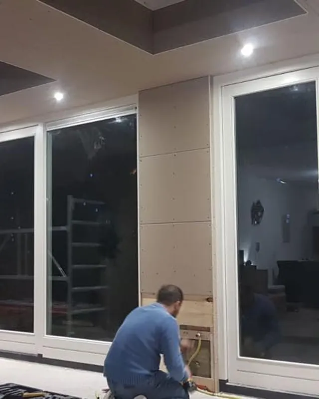

Over ons
Klusser in hart en nieren.
Sander Reinsma ging na zijn studie aan het werk bij een aannemer in nieuwbouw, renovatie en onderhoud. In 2013 begon hij voor zichzelf.
"Wij denken niet in problemen maar in oplossingen. U geeft uw wensen aan, wij zorgen voor de oplossing en de uitvoering."
Sinds2013 eigen bedrijf
ErvaringNieuwbouw, renovatie en onderhoud
MateriaalVeelal Langerak Doe Het Zelf, Utrecht
KvK58761330
Plannen voor uw huis?
Vertel kort wat u wilt, stuur een foto mee en Sander denkt met u mee.